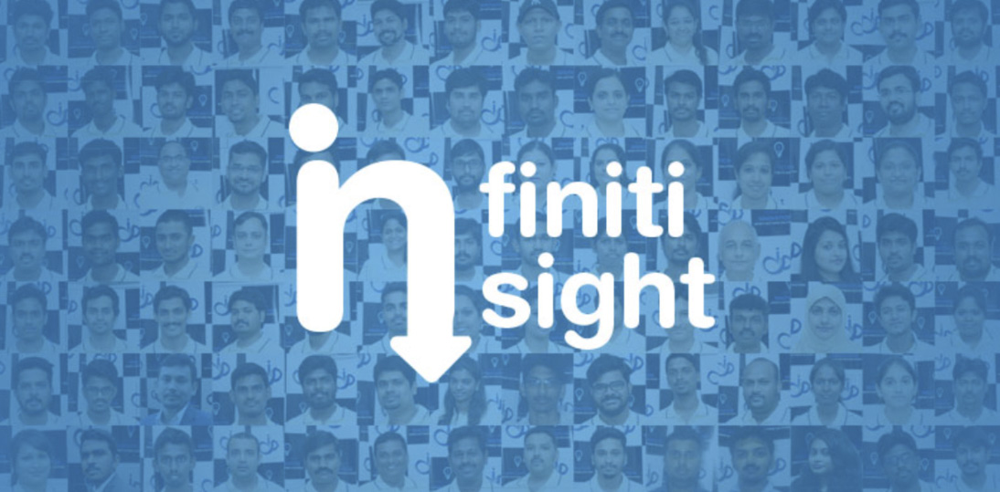
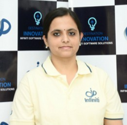

Work Anniversary :
- Selvendran.R (Sr.Automation Quality-IT) - 2 Years
- Senneth Mathew.J (Travel Counselor) - 1 Year
- Shalini (HR-Manager-BD) - 1 Year
Infiniti CONGRATULATES him for being a part of the growth story of the company.

We often hear how important it is to behave "professionally" in the workplace.
If
you want to get ahead, be taken seriously, and have your boss think of you as an asset to the team,
doing things in a professional way is vital.
But what exactly do employers mean by this term? Surely it's enough to do your job well and show up
on
time consistently. Or are there other things expected of you if you want to be viewed as being
professional?
Your employer may not tell you exactly their own view of what being
professional
means. But we all know from experience how to get labelled as "unprofessional". By finishing tasks
or
projects late, for instance. Being unprepared when attending meetings. Spending time gossiping at
work.
Other ways to be seen as unprofessional? Treat people with disrespect. Steal their thunder by using
their ideas without giving them credit. Say one thing then do the complete opposite. Break promises
regularly.
Acting like a professional really means doing what it takes to make others think of you as reliable,
respectful, and competent. Depending on where you work and the type of job you have, this can take
on
many
different forms.
There are, however, quite a few common traits when it comes to being professional. This includes the
following:
The more you put into practice the 10 points listed above, the better your chances will be to create
a
positive reputation for yourself. This can ultimately translate into raises and promotions, chances
to
work on more assignments that you enjoy, less likelihood of being downsized when layoffs are being
considered, and the respect of peers and senior management.
The more you put into practice the 10 points
listed above, the better your chances will be to create a positive reputation for yourself. This can
ultimately translate into raises and promotions, chances to work on more assignments that you enjoy,
less likelihood of being downsized when layoffs are being considered, and the respect of peers and
senior management.
Trimex Sands is India's top specialty value chain provider for industrial minerals,Founded in 1985.
Trimex's global delivery network which delivers products such as Barite, Bentonite, Iron Ore,
Feldspar, Bauxite, Ball Clay and Kaolin, among others, to the world's leading Oil Drilling, Ceramic,
Glass, Construction, Energy, Steel, and Fertilizer companies.
Client close by Sales Team.
"
"Infiniti is the perfect place for the freshers to Work & Learn. In Infiniti lots of opportunities to learn domain, technologies, business, culture, good habits and many more skills. I learned a lot during that past ten years period and still learning. Infiniti provides me an identity in my family life & society. I would feel like my home. Gained an industry knowledge & business experience while working in Infiniti. Excellent perks and an extremely helpful management. Infiniti gives me the freedom to decide how you work like to go about the project. Friends (co-workers) & management are helped me a lot and aid when I needed. Thank you so much to all for giving a wonderful time to share my experience in INFINITI.""

Mrs. Amalya Mary
Buisness Analyst
Inspiration: Mom, Dr.ABJ
Memorable milestone: Winning Infiniti Intrapreneurship
One thing that I learned hard way: Cooking Biriyani
Work-life balance: Planning my works
The best advice that I got forever: If you think of buying a car, target buying a Flight then you end up buying a car
Work Anniversary :
Infiniti CONGRATULATES him for being a part of the growth story of the company.
Birthdays of the week :
Infiniti wishes them a very HAPPY BIRTHDAY.